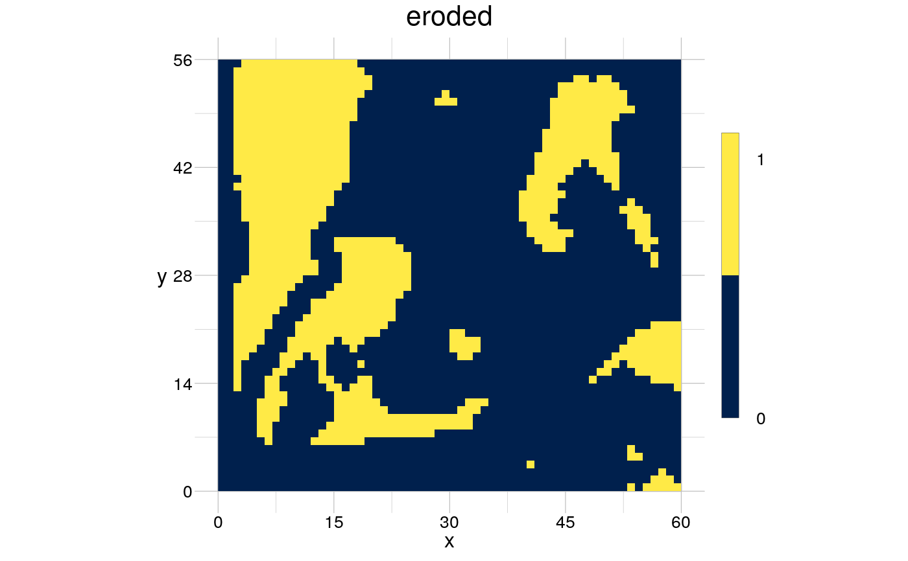
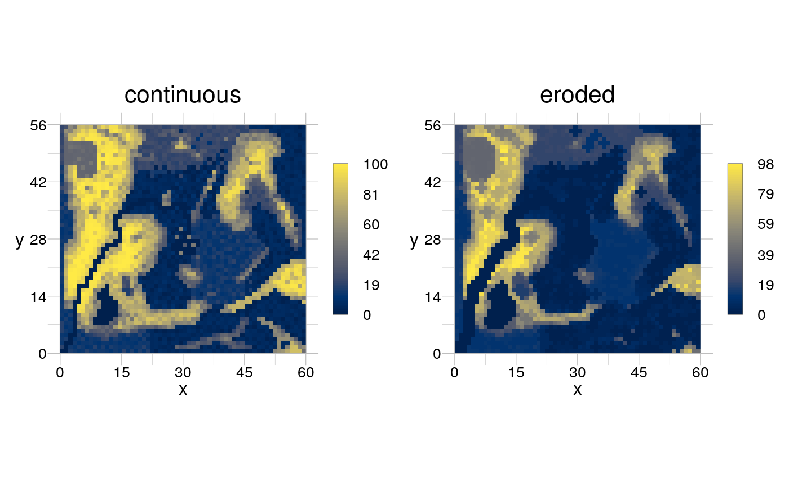

The morphological operation 'erode' removes cells at the boundary of a foreground patch in a binarised raster.
rErode(obj, kernel = NULL)
| obj | [ |
|---|---|
| kernel | [ |
A RasterLayer of the same dimension as obj, where an
erosion has been performed.
A morphological dilation changes the values in a raster after comparing each value to a kernel that moves systematically across the raster. A kernel is any 2D array with an odd number of cells in each dimension and a focal cell in the middle. The cells of a kernel can have four categories of values: 0, 1, NA and any value > 1. When the kernel values match the values of the input raster, the input raster cell covered by the focal kernel cell is modified according to a specific operation, for instance the smallest value covered by the kernel is assigned.
Rasters are either binary or non-binary (greyscale) rasters.
For binary rasters the kernel cells with values 0 and 1 are matched accurately in the input raster. Cells with value NA will be ignored, i.e. "it does not matter what value is there".
For a non-binary raster the value 0 does not have any meaning and every 0 is turned into an NA. In case a non-binary kernel is defined to erode a non-binary (greyscale) raster, from each value of the input raster that is currently covered by the kernel is the focal kernel value is subtracted and the minimum of this set of values is assigned to the input raster cell covered by the focal kernel cell.
# use as standalone input <- rtData$continuous binarised <- rBinarise(input, thresh = 30) visualise(rErode(obj = binarised))# use another kernel (myKernel <- matrix(1, 3, 3))#> [,1] [,2] [,3] #> [1,] 1 1 1 #> [2,] 1 1 1 #> [3,] 1 1 1